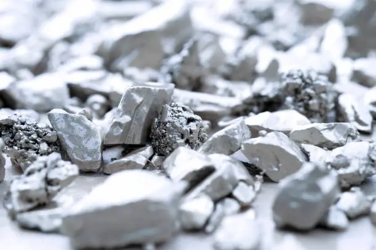
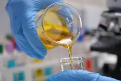

Building on the Shoulders of Giants

The mission for this website is to provide a hub of learning and innovation to improve upon the process of extracting silver from e-waste using cooking oils. Peer review and suggestions are welcome.